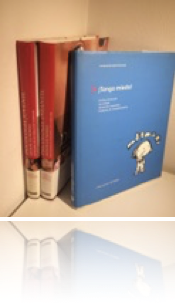
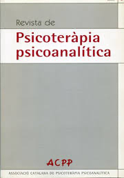

Atenció presencial i virtual
|

|
LLIBRES
"Psicología Infantil. Asesor de padres". ISBN: 84-494-2588-1 Ed. Oceano.
"Psicología Juvenil. Asesor de padres. ISBN 84-494-2449-6 Ed. Oceano"
"La salud de nuestros hijos. Tengo miedo!". 2004. Barcelona.ISBN:84-672-0571-7 Ed. Círculo de Lectores.

ARTICLES
Cliqueu aqui per accedir a l’arxiu d’alguns d'aquests articles en PDF.
Revista de l'Associació Catalana de Psicoteràpia Psicoanalítica
- "Psicologia digital: implicacions de les noves tecnologies en la salut mental" (Desembre 2020).
- "El canvi climàtic i la salut mental: el paper de la psicologia en la consciència ecològica i l'acció transformadora" (Desembre 2023).

Diari Ara, suplement Criatures
- "Noves tecnologies i desenvolupament saludable", Febrer 2019. Llegir
- "Despendre's dels obejectes", Gener 2018. Llegir
- "Protegir o sobreprotegir", Febrer 2017. Llegir
- "Acompanyar als fills en el descobriment de la seva sexualitat", Setembre 2016. Llegir
Revista Salud y Vida, diari La Vanguardia
- "Cambios psicológicos en el ciclo menstrual" marzo 2002
- "Autoestima" abril 2002
- "Potencia tu empatía" mayo 2002
- "Comunicación de los sentimiento en la pareja" junio 2002
- "La seducción" julio 2002
- "La creatividad" septiembre 2002
- "Autoconocimiento a través de la pareja" octubre 2002
- "Sobrevivir una pérdida" noviembre 2002
- "Conflicto en las relaciones de pareja" enero 2003
- "la relación con nuestros padres" febrero 2003
- "El silencio interior" marzo 2003.
- "El lenguaje no verbal" abril 2003
- "Cultivar la empatía" mayo 2003
- "Fidelidad en la pareja" abril 2003
- "Problemas de convivencia" julio 2003
- "La sensualidad" septiembre 2003
- "Armonía entre el trabajo y la vida personal" octubre 2003.
- "Intimidad sexual en la pareja" noviembre 2003
- "Las expectativas en la pareja" diciembre 2003
- "El sentido del humor y la salud" enero 2004
- "Manejar el enfado" febrero 2004
- "La familia de la pareja" marzo 2004
- "La pareja y la vida social" abril 2004
- "El miedo al compromiso" mayo 2004
- "La infertilidad" junio 2004
- "Gestionar el ocio" julio 2004
- "La pareja como espejo" septiembre 2004
- "Falta de deseo sexual" octubre 2004
- "Separaciones conflictivas" noviembre 2004
- "Educar sin pareja" diciembre 2004
- "Como escogemos la pareja" enero 2005
- "Cuando llega el primer hijo" febrero 2005
- "Adoptar un niño" marzo 2005
- "La enfermedad en la familia" abril 2005
- "Dudas en la pareja" mayo 2005
- "Adicción a las relaciones" junio 2005
- "Cuando los hijos llegan a la adolescencia" julio 2005.
- "Egoísmo en las relacions" septiembre 2005
- "Enfermedades psicosomáticas" octubre 2005
- "Insatisfaccin en el trabajo" noviembre 2005
- "Miedo a enfermar" diciembre 2005.
- "Dar lo mejor de nosotros" enero 2006.
- "El cansancio crónico" febrero 2006
Revista Integral
- "La nueva pareja" num 276, 64-67, 2002
- "Superar una crisis" num 279, 66-69, 1998
- "Confía en tu intuición" num 284, 62-65, 1998
- "Vencer la hipocondría" num 290, 64-67, 2004
- La nueva pareja” num 276, 64-67, 2002
Revista Cuerpo Mente
- "Pareja ¿iguales o complementarios?" num 129, 64-67, 2003
- "Gana empatía" num 134, 78-81, 2003
- "Afrontar los cambios" num 137, 74-77, 2003
- "Vencer la rutina en la pareja" num 142, 2004
- "Mejorar con los años" num 150, 80-83, 2004
- "La necesidad de agradar" num 151, 74-77, 2004
- "El síndrome de Peter Pan" num 169
- "La pareja ante la infertilidad" num 187
- "La virtud de no aplazar" num 198
- "Llevarse bien con los alimentos" num 295 Novembre 2016
Revista Mente Sana
- "Como entender y gestionar nuestras emociones" num 3, 2005
- "Aprender a escuchar a los demás" num 5, 2005
- "Si tu ganas, yo gano" num 6, 2005
- "7 llaves para desarrollar tu potencial" num 8, 2005
Contactar:
C/Casanova 46, 4rt 1a, Barcelona.
Mb: 696453277
Email: trescoca@gmail.com
Contactar:
Molins de Rei.
Mb: 696453277
Email: trescoca@gmail.com